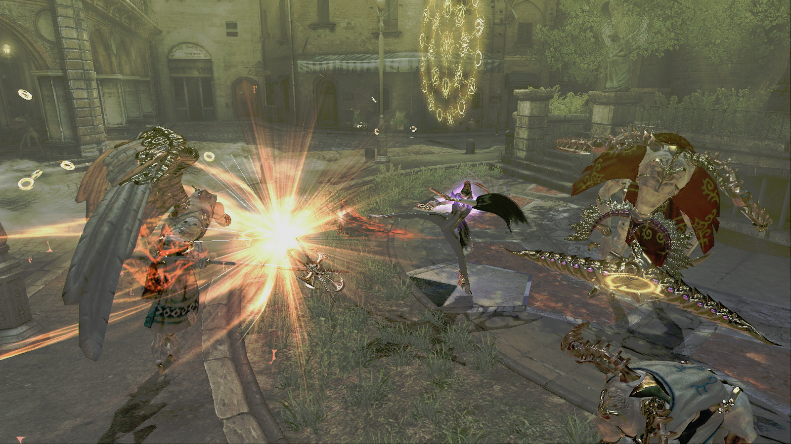
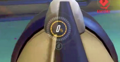

For the concept discovery, I investigated about the replayability in videogames. I took references from a lot of different games, since examples of
replayability can be found pretty much everywhere.
As a part of the level design team, I worked on the level 1 design and blockout. I also designed the first iteration of the level 2, and I've been helping
with the positions of the cameras and the transitions throughout the whole duration of the project.
Earlier during the project, we were thinking about making an in-game shop where the players could exchange the monster drops for more items.
I also worked on the different monster drops. We had a lot of ideas, and wanted to make them all fit in well with the theme of The Witcher.
We also had the idea to create a lobby where players could wait before starting the game, but we didn't want it to be just an empty space with nothing to do
so we made some different proposals about things that could be found and interacted with in the lobby.
As a member of the combat design team, my work has been very diverse. First, I started by searching better references for the combat system,
looking for ideas that would fit better into our game, and I investigated ways to improve the combat feel, to make the combat more interesting and fun.

I also worked on the design of the scoring system and the ultimate charging and management.

Later, I investigated and made some proposals to solve the stunlock problem, so the enemies couldn't get perma stunlocked to death. I also worked
on the enemy progression and then I started balancing the enemies a little bit, since they were too strong.
I also made 3 different proposals for a brand new ultimate ability that could work for both co-op and single player. These ultimates were variants or a mix of
other abilities that already exist in the The Witcher universe, to make it believable.
I also captured new images for the narrative introduction of the game, as the old images were outdated and didn't match the new art of the game.
At the same time, I proposed ways to add the "on fire" mechanic, to provide an esthetic effect when players overperform during the game.
Lastly, I added particles to the final level and the final boss stage. I've also been making builds every few days to check that everything still worked properly.


{kind=link}